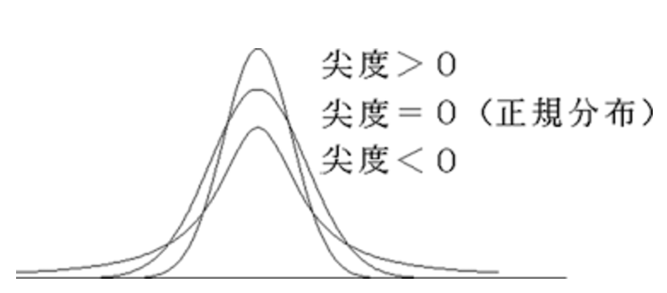

定理の紹介と証明
1.1 定理5
i.i.dな確率ベクトルについての中心極限定理
1.2 リンドバーグ・フェラーの定理
独立だが同分布でない確率変数についての中心極限定理
推定量,統計量が漸近正規性を持つことを示す。
2.1 例題5.1
回帰係数の最小二乗推定量(リンドバーグより)
2.2 例題5.2
一対比較のための確率化t検定のt統計量(リンドバーグより)
2.3 例題5.3
一対比較のための符号付き順位検定の符号付き順位統計量(例5.2より)
中心極限定理の収束が一様でない
3.1 ベリー・エシーンの定理
中心極限定理の近似誤差の上限
3.2 エッジワースの展開
近似精度の改善
定理の紹介と証明
i.i.d.な確率ベクトルに成り立つ中心極限定理。
\(\underline{中心極限定理}\)
\(\bf{X}_{1},\bf{X}_2,...\)はi.i.dな確率ベクトルで、 平均\(\bf{\mu}\)と有限な分散行列\(\bf{\Sigma}\)を持つとし、
\(\bar{\bf{X}}_{n}=(1/n)\sum_{j=1}^{n}\bf{X}_{\rm{j}}\)とおく。
このとき、\(\sqrt{n}(\overline{\bf{X}}_{n}-\bf{\mu})\stackrel{\mathcal{L}}{\longrightarrow }\mathcal{N}(\bf{0},\bf{\Sigma})\)である。
(例)
1次元の中心極限定理
i.i.d.な確率変数\(X_{1},...,X_{n}\)の中心極限定理は、平均\(\mu\)と有限な分散\(\sigma^{2}\)を持つとし、
\(\sqrt{n}(\bar{X}_{n}-\mu)/\sigma\stackrel{\mathcal{L}}{\longrightarrow }\mathcal{N}(0,1)\)
で書ける。 ここで、\(\bar{X}_{n}=(1/n)\sum_{j=1}^{n}X_{j}\)である。
(例)
サイコロをn回振る試行を考える。
このとき、確率変数\(X_{j}\)をj回目のサイコロの目とする。
\(X_{1},...,X_{n}\)はi.i.d.な確率変数であり、
\(E[X_{j}]=7/2,V(X_{j})=35/12<\infty\)を持つ。
よって、\(\sqrt{n}(\bar{X}_{n}-7/2)/\sqrt{35/12}\stackrel{\mathcal{L}}{\longrightarrow }\mathcal{N}(0,1)\) が成り立つ。
\((X-\mu)/\sigma\sim\mathcal{N}(0,1)\)\(\leftrightarrow\)\(X\sim\mathcal{N}(\mu,\sigma^2)\)なので、
\(\bar{X}_{n}\stackrel{\mathcal{L}}{\longrightarrow }\mathcal{N}(7/2,\frac{35/12}{n})\)が成り立つ。
ここで、\(\bar{X}=\sum_{j=1}^{n}X_{j}\)とすると、\((1/n)\bar{X}\stackrel{\mathcal{L}}{\longrightarrow }\mathcal{N}(7/2,\frac{35/12}{n})\)が成り立つ。
\(aX+b\sim\mathcal{N}(a\mu+b,a^{2}\sigma^{2})\)\(\leftrightarrow\)\(X\sim\mathcal{N}(\mu,\sigma^{2})\)なので、
\(\bar{X}\stackrel{\mathcal{L}}{\longrightarrow }\mathcal{N}((7/2)n,(35/12)n)\)が成り立つ。
\(E[\bar{X}]=(7/2)n,V(\bar{X})=(35/12)n\)より、
中心極限定理はi.i.d.な確率変数の和がその平均と分散を持つ正規分布で
近似できることをいっている。
(戻す)
\(\underline{法則収束}\)(1章)
確率ベクトル\(\bf{X}\)の分布関数\(F_{\bf{X}}\)の任意の連続点\(\bf{x}\)において
\(F_{\bf{X}_{n}}(\bf{x})\to \it{F}_{\bf{X}}(\bf{x})\)が成り立つとき、\(\bf{X}_{n}\)は\(\bf{X}\)に法則収束するという。
\(\underline{連続定理}\)(3章)
\(\bf{X}_{n}\stackrel{\mathcal{L}}{\longrightarrow}\bf{X}\) \(\Leftrightarrow\) 任意の\(\bf{t}\in \mathbb{R}^{\rm{d}}\)に対して \(\varphi_{\bf{X}_{n}}(\bf{t})\to \varphi_{\bf{X}}(\bf{t})\)
\(\underline{特性関数}\)(4章)
任意の\(\bf{X}\in\mathbb{R}^{\rm{d}}\)と\(\bf{t}\in\mathbb{R}^{\rm{d}}\)に対して、特性関数は
\begin{align*} \varphi_{\bf{X}}(\bf{t}) & = E[\mathrm{e}^{i\bf{t}^{T}\bf{X}}]\\ & = \int_{-\infty}^{\infty}e^{itx}f_{X}(x)dx \end{align*}
と定義される。性質
ただし、\(\bf{\mu}\rm{=}E[\bf{X}]\)
\(\underline{テイラー展開}\)(4章)
f:\(\mathbb{R}^{d}\to \mathbb{R}\)であり、\(\ddot{f}(\bf{x})\)が{\(\bf{x}\rm{:|}\bf{x}-\bf{x}_{0}\rm{|} < r \)}において連続ならば、
\(|\bf{t}| \rm{<} r\)において、
\begin{align*} f(\bf{x}_{0} \rm{+} \bf{t}\rm{)} \rm{=} f(\bf{x}_{0}\rm{)+}\dot{f}(\bf{x}_0)\bf{t}\rm{+}\bf{t}^{T} (\int_{0}^{1}\int_{0}^{1}\rm{v}\ddot{f}(\bf{x}_{0}\rm{+uv}\bf{t})\rm{dudv)}\bf{t} \end{align*}
\(\underline{複素数列の収束}\)
\(\lim_{n\to\infty}na_{n}\)が存在するような複素数列\(a_{n}\)においては、
\((1+a_{n})^{n}\to \exp(\lim_{n\to\infty}na_{n})\)である。
独立で同分布でない確率変数について成り立つ中心極限定理。
\(\underline{リンドバーグ・フェラーの定理}\)
\begin{align*} \left( \begin{array}{cccc} X_{11} & & & \\ X_{21} & X_{22} & & \\ \vdots & \vdots & \ddots & \\ X_{n1} & X_{n2} & \cdots & X_{nn}\\ \end{array} \right) \end{align*}
\(n=1,2,...\)に対して、\(X_{nj},j=1,2,...n\)は独立な確率変数列であり、
\(E[X_{nj}]=0\)かつ\(V(X_{nj})=\sigma_{nj}^2<\infty\)であるとする。
\(Z_{n}=\sum_{j=1}^n X_{nj}, B_{n}^2=V(Z_{n})=\sum_{j=1}^{n}\sigma_{nj}^2\)とおく。
このとき、任意の\(\varepsilon \)に対して、リンドバーク条件
\begin{align*} \frac{1}{B_{n}^2}\sum_{j=1}^{n}E[X_{nj}^{2} I(|X_{nj}|\geq \varepsilon B_{n})]\to 0 \ \ (n\to\infty) \end{align*}
が成り立てば、\(Z_{n}/B_{n}\stackrel{\mathcal{L}}{\longrightarrow}\mathcal{N}(0,1)\)である。
逆に、\(Z_{n}/B_{n}\stackrel{\mathcal{L}}{\longrightarrow}\mathcal{N}(0,1)\)であるとき、さらに\((1/B_{n}^2)\max_{i\leq n}\sigma_{ni}^2\to 0(n\to\infty)\)
であれば(つまり、\(B_{n}^2\)の特定の項が極限に大きな影響を与えることがないならば)、
リンドバーグ条件が成り立つ。
推定量,統計量が漸近正規性をもつことを示す。
i=1,2,...に対して、\(X_{i}=\alpha + \beta z_{i} + e_{i}\)と仮定する。
ただし、\(z_{i}\)は必ずしも等しくない既知の定数で、
\(e_{i}\)は平均0と共通の分散\(\sigma^2<\infty\)を持つ互いに独立な確率変数である。
演習問題4.1によると、\(\beta\)の最小2乗推定量\(\hat{\beta}_{n}\)は、
\(\sum_{i=1}^{n}(z_{i}-\bar{z}_{n})^2\to\infty(n\to\infty)\)が成り立つとき一致推定量である。
ここでは、条件を強めて、
(a)\(e_{i}\)は同じ分布に従う。
(b)\(\frac{\max_{i\leq n}(z_{i}-\bar{z}_{n})^2}{\sum_{i=1}^{n}(z_{i}-\bar{z}_{n})^2}\to 0(n\to\infty)\)
を仮定する。
このとき、\(\hat{\beta}_{n}\)が漸近正規性を持つことをリンドバーグ・フェラーの定理より示す。
\(\underline{漸近正規性}\)
推定量の分布が正規分布に近似できる性質。
\(\underline{演習4.1}\)
既知の\(z_{1},...,z_{n}\)に対して、\(X_{1},...,X_{n}\)は独立で、
線形回帰\(E(X_{j})=\alpha+\beta z_{j}\)で平均が与えられ、
一定の分散\(V(X_{j})=\sigma^{2}\)をもつとする。
\(X_{1},...,X_{n}\)に基づく\(\alpha,\beta\)の最小2乗推定量は
\begin{align*} L&=\sum_{j=1}^{n}[X_{j}-(\alpha+\beta z_{j})]^{2}\\ \frac{\partial L}{\partial \alpha} &= -2\sum_{j=1}^{n}[X_{j}-(\alpha+\beta z_{j})] = 0\\ \frac{\partial L}{\partial \beta} &= -2\sum_{j=1}^{n}[X_{j}-(\alpha+\beta z_{j})]z_{j} =0 \end{align*}
を解くと、\begin{align*} \hat{\beta}_{n} &= \frac{\sum_{j=1}^{n}(z_{j}-\bar{z}_{n})}{\sum_{j=1}^{n}(z_{j}-\hat{z}_{n})^2}X_{j}\\ \hat{\alpha}_{n} &= \bar{X}_{n}-\hat{\beta}_{n}\bar{z}_{n} \end{align*}
で与えられる。ただし、\(\bar{z}_{n}=(1/n)\sum_{j=1}^{n}z_{j},\bar{X}_{n}=(1/n)\sum_{j=1}^{n}X_{j}\)である。(a)\(z_{1},...,z_{n}\)に関するどのような条件の下で、\(\hat{\beta}_{n}\)が\(\beta\)の一致推定量となるか?
ガウス・マルコフの定理より、この推定量は不偏推定量となるので、
\(\hat{\beta}_{n}\)の平均は
\begin{align*} E[\hat{\beta}_{n}]=\frac{\sum_{j=1}^{n}(z_{j}-\bar{z}_{n})(\alpha+\beta z_{j})}{\sum_{j=1}^{n}(z_{j}-\bar{z}_{n})^{2}}=\beta \end{align*}
が成り立つ。また分散は
\begin{align*} V(\hat{\beta}_{n})=\frac{\sum_{j=1}^{n}(z_{j}-\bar{z}_{n})^{2}\sigma^{2}}{(\sum_{j=1}^{n}(z_{j}-\bar{z}_{n})^{2})^{2}}=\frac{\sigma^{2}}{\sum_{j=1}^{n}(z_{j}-\bar{z}_{n})^{2}} \end{align*}
となるので、\(\hat{\beta}_{n}\)が一致推定量になるための必要十分条件は\(\sum_{j=1}^{n}(z_{j}-\bar{z}_{n})^{2}\to \infty\)である。
\(\underline{定義関数の期待値}\)
\(e_{j}\)を確率変数、\(f(e_{j})\)を密度関数、aを定数とする。
このとき
\begin{align*} E[e_{j}^2I(|e_{j}| \geq a)] = \int_{|e_{j}| \geq a} e_{j}^2 f(e_{j})de_{j} \end{align*}
である。
\(\underline{同一分布の期待値}\)
i=1,2,...に対して、確率変数\(e_{j}\)は同じ分布に従うとし、\(z_{j\)を定数とする。
このとき
\begin{align*} \sum_{j=1}^{n}z_{j}E[e_{j}] = E[e]\sum_{j=1}^{n}z_{j} \end{align*}
である。
\(\underline{一対比較実験}\)
処置と対照を比較するための一対比較実験では、
2n実験単位を2実験単位ずつのnグループに分ける。
各グループの中の2実験単位はできるだけ同じものを選ぶ。
各グループで、どちらの実験単位が処置に使われるか、
対照に使われるかはランダムに選ばれる。
j=1,2,...,nに対して、\( (X_{j},Y_{j})\)でj番目の測定結果を表し、
\(X_{j}\)は処置結果,\(Y_{j}\)は対照結果を表す。
(例1)
(例2)
因果推論の文脈において
目的：ある薬が病気を治すのに役立つか知りたい
パラメータ：性別,年齢,体重,...
できるだけこれらのパラメータが同じ人を2人選ぶ(Aさん,Gさん)。
どちらかに薬を処方し(処置群)、どちらかに薬を処方しない(対照群)。
治るまでにかかった日数を処置結果,対照結果とすると、
比較して処置結果の方が短いと効果ある。
\(\underline{一対比較t検定}\)
処置と対照を比較するための通常の一対比較t検定では、
\(Z_{j}=X_{j}-Y_{j}\)がi.i.d.で有限な分散を持つと仮定する。
処置と対照の間に差異がない(\(X_{j}\)と\(Y_{j}\)が同一分布に従う)という仮説\(H_{0}\)は、
\(Z_{j}\)の分布が原点に関して対称であるという仮説に等しい。
仮説\(H_{0}\)の検定は一般に一標本t統計量に基づく。
(補足)
因果推論における一対比較実験では、\(X_{j},Y_{j}\)に正規分布を仮定して、
互いの分散を等しいとする。
それで、平均について差異がないかt検定で確かめるっぽい。
参考：統計的因果推論 岩崎学 朝倉書店 p40〜49
\(\underline{一標本t統計量}\)
母平均と標本平均に差があるか調べる。
帰無仮説\(H_{0}\)：母平均(=0)と標本平均には差はない。
t統計量
\begin{align*} t &= \frac{標本平均-母平均}{\sqrt{不偏分散/データ数}}\\ &= \frac{\bar{Z}_{n}-0}{\sqrt{\frac{1}{n-1}\sum_{j=1}^{n}(Z_{j}-\bar{Z}_{n})^2/n}}\\ &= \sqrt{n-1}\bar{Z}_{n}/s_{z}\\ &=\sqrt{n-1}(\bar{X}_{n}-\bar{Y}_{n})/s_{z} \end{align*}
ここで、\(\bar{Z}_{n}\)は標本平均であり、\(\bar{Z}_{n}=\frac{1}{n}\sum_{j=1}^{n}Z_{j}\)で、
\(s_{z}\)は標本の標準偏差であり、\(s_{z}^2=(1/n)\sum_{j=1}^{n}(Z_{j}-\bar{Z}_{n})^2\)である。
\(Z_{j}\)がi.i.d.であり、正規分布に従うなら、t統計量は自由度n-1のt分布に従う。
\(\underline{確率化検定(あるいは並び替え検定)}\)
確率化検定においても、同じ帰無仮説\(H_{0}\)(\(Z_{j}\)の分布が原点に対称)を
棄却するべきか判断できる。
処置と対照のペアの割り当てが独立かつ無作為であるという事実のみに基づき、
\(Z_{j}\)の観測値\(z_{j}\)が与えられると、それら(観測値)の条件付きでの解析がなされる。
このため、確率変数\(Z_{j}\)(\(|Z_{j}|=|z_{j}|\)の条件を持つ)は仮説\(H_{0}\)のもとで独立で、
\(P(Z_{j}=+|z_{j}|)=P(Z_{j}=-|z_{j}|)=\frac{1}{2}\)の分布を持つと仮定される。
それゆえ、仮説\(H_{0}\)のもとで、ベクトル\((Z_{1},...,Z_{n})\)は\(2^{{n}}\)個の値
\((\pm|z_{1}|,...,\pm|z_{n}|)\)を等確率で取り、
\begin{align*} P(+|z_{1}|,...,+|z_{n}|)=...=P(-|z_{1}|,...,-|z_{n}|)=\left(\frac{1}{2} \right)^{n} \end{align*}
となる。確率化t検定でも1標本t統計量\(t=\sqrt{n-1}\bar{Z}_{n}/s_{z}\)を用いる。
しかし、棄却判断にはt分布は使わず、\((Z_{1},...,Z_{n})\)の等しく取りうる
\(2^{n}\)個の値から導かれる離散分布を用いる。
nが小さい場合は、\(2^{n}\)個の全ての値に対してt値を計算し、その分布を求める。
nが大きい場合は、モンテカルロ法を用いて近似的に求める方法と、
無作為化された帰無仮説\(H_{0}\)のもとでのt統計量の大標本分布を求める方法がある。
ここでは、nが大きい場合の後半の方法に関して、
t統計量が漸近正規性を持つことをリンドバーグ・フェラーの定理より示す。
ただし、仮定として確率変数\(Z_{j}\)の観測値\(z_{j}\)について、
\begin{align*} \frac{\max_{j\leq n}z_{j}^2}{\sum_{j=1}^{n}z_{j}^2}\to 0\ \ \ (n\to\infty) \end{align*}
が成り立つ場合を考える。\(\underline{リンドバーグ・フェラーの定理の記号法との比較}\)
(リンドバーグ・フェラーの定理)
確率変数\(X_{nj}(j=1,...,n)\)が独立で、
\(E[X_{nj}]=0\)かつ\(V(X_{nj})=\sigma_{nj}^2\)である。
\(Z_{n}=\sum_{j=1}^{n}X_{nj},B_{n}^{2}=V(Z_{n})=\sum_{j=1}^{n}\sigma_{nj}^{2}\)とおく。
このとき、任意の\(\varepsilon>0\)に対して
\begin{align*} \frac{1}{B_{n}^2}\sum_{j=1}^{n}E[X_{nj}^{2} I(|X_{nj}|\geq \varepsilon B_{n})]\to 0 \ \ (n\to\infty) \end{align*}
が成り立てば、\(Z_{n}/B_{n}\stackrel{\mathcal{L}}{\longrightarrow}\mathcal{N}(0,1)\)である。(例題5.2)
確率変数\(Z_{j}(j=1,...,n)\)が独立で、
\(E[Z_{j}]=(1/2)|z_{j}|+(1/2)(-|z_{j}|)=0\)かつ
\(V(Z_{j})=(1/2)|z_{j}|^{2}+(1/2)(-|z_{j}|)^{2}=z_{j}^{2}\)である。
\(B_{n}^{2}=V(\sum_{j=1}^{n}Z_{j})=\sum_{j=1}^{n}z_{j}^2\)とおく。
このとき、任意の\(\varepsilon>0\)に対して
\begin{align*} \frac{1}{B_{n}^2}\sum_{j=1}^{n}E[Z_{j}^{2} I(|Z_{j}|\geq \varepsilon B_{n})]\to 0 \ \ (n\to\infty) \end{align*}
が成り立てば、\(\sum_{j=1}^{n}Z_{j}/B_{n}\stackrel{\mathcal{L}}{\longrightarrow}\mathcal{N}(0,1)\)である。ここで、\(\sum_{j=1}^{n}Z_{j}/B_{n}\)は以下のように変形できる。
\begin{align*} \sum_{j=1}^{n}Z_{j}/B_{n} = \sqrt{n}\bar{Z}_{n}/\sigma_{n} \end{align*}
ここで、\(\sigma^{2}=(1/n)\sum_{j=1}^{n}z_{j}^{2}\)である。(これは、t統計量の形に寄せてる。)
\(\underline{t統計量(=\sqrt{n-1}\bar{Z}_{n}/s_{z})と統計量\sqrt{n}\bar{Z}_{n}/\sigma_{n}の同値性}\)
\(t=\sqrt{n-1}\bar{Z}_{n}/s_{z},v=\sqrt{n}\bar{Z}_{n}/\sigma_{n}\)とおく。
\(s_{z}=\sqrt{(1/n)\sum_{j=1}^{n}(Z_{j}-\bar{Z}_{n})^{2}}>0,\sigma_{n}=\sqrt{(1/n)\sum_{j=1}^{n}z_{j}^{2}}>0\)より、
tとvは同じ符号をもち、さらに
\begin{align*} s_{z}^{2} &= \frac{1}{n}\sum_{j=1}^{n}(Z_{j}-\bar{Z}_{n})^{2}\\ &= \frac{1}{n}\sum_{j=1}^{n}Z_{j}^{2}-\frac{2}{n}\bar{Z}_{n}\sum_{j=1}^{n}Z_{j}+\bar{Z}_{n}^{2}\\ &= \frac{1}{n}\sum_{j=1}^{n}z_{j}^{2}-\frac{2}{n}\bar{Z}_{n}n\bar{Z}_{n}+\bar{Z}_{n}^{2}\\ &= \sigma_{n}^2 - \bar{Z}_{n}^{2}\\ v^2 &= n\frac{\bar{Z}_{n}^{2}}{\sigma_{n}^2}\\ &= n\frac{\bar{Z}_{n}^{2}}{(s_{z}^2+\bar{Z}_{n}^2)}\\ &= n\frac{\bar{Z}_{n}^2/s_{z}^2}{(1+\bar{Z}_{n}^2/s_{z}^2)}\\ &= n\frac{t^2}{((n-1)+t^2)}\\ &= n\left(\frac{n-1}{t^2}+1\right)^{-1} \end{align*}
が成り立つことより、tはvの増加関数となる。なぜ増加関数で同値?
\(\underline{符号付き順位検定}\)
確率化t検定と同じ仮定の下に基づく。
つまり、\(Z_{j}\)の観測値\(z_{j}\)が与えられると、それら(観測値)の条件付きでの
解析がなされる。
このため、確率変数\(Z_{j}\)(\(|Z_{j}|=|z_{j}|\)の条件を持つ)は仮説\(H_{0}\)のもとで独立で、
\(P(Z_{j}=+|z_{j}|)=P(Z_{j}=-|z_{j}|)=\frac{1}{2}\)の分布をもつ。
\(\underline{符号付き順位統計量}\)
\(|z_{1}|,...,|z_{n}|\)を最小値から最大値へと並べたときの\(|z_{j}|\)の順位を\(R_{j}\)とする。
(ここでは、\(|z_{j}|\)はすべて異なり、どの\(|z_{j}|\)も0でないとする。)
このとき、符号付き順位検定量\(W_{+}\)は、正値をとる\(Z_{j}\)に対する順位\(R_{j}\)の和であり、
\begin{align*} W_{+}=\sum_{j=1}^{n}R_{j}I(Z_{j}>0) \end{align*}
と書ける。\(0<|z_{1}|<|z_{2}|<...<|z_{n}|\)であるように、\(Z_{j}\)の添え字を付け直すと、
\(W_{+}=\sum_{j=1}^{n}iI(Z_{j}>0)\)と書ける。
\(H_{0}\)の下で、\(I(Z_{j}>0)\)はi.i.d.なベルヌーイ確率変数で、
0または1をとる確率は互いに等しい。
(\(P(Z_{j}=+|z_{j}|)=P(Z_{j}=-|z_{j}|)=\frac{1}{2}\)より)
符号付き順位統計量\(W_{+}\)が漸近正規性を持つことを例題5.2を用いて示す。
\(\underline{例題5.2の仮定}\)
確率変数\(Z_{j}\)の観測値\(z_{j}\)について、
\begin{align*} \frac{\max_{j\leq n}z_{j}^2}{\sum_{j=1}^{n}z_{j}^2}\to 0\ \ \ (n\to\infty) \end{align*}
が成り立つ。\(\underline{平均}\)
\begin{align*} E[W_{+}] &= \sum_{j=1}^{n}iE[I(Z_{j}>0)]\\ &= \frac{1}{2}\sum_{j=1}^{n}j\\ &= \frac{n(n+1)}{4} \end{align*}
\(\underline{分散}\)
\begin{align*} &V(W_{+})\\ = &E[(W_{+}-E[W_{+}])^{2}]\\ = &E[W_{+}^{2}]-E[W_{+}]^{2}\\ = &E[(\sum_{j=1}^{n}jI(z_{j}>0))^2]-(\frac{1}{2}\sum_{j=1}^{n}j)^{2}\\ = &\sum_{j=1}^{n}j^{2}E[I(z_{j}>0)]+2\sum_{j=1}^{n}\sum_{i=1}^{n}jiE[I(z_{j}>0)]E[I(z_{i}>0)]-\frac{1}{4}(\sum_{j=1}^{n}j)^{2}\\ = &\frac{1}{2}\sum_{j=1}^{n}j^{2}+\frac{1}{2}\sum_{j=1}^{n}\sum_{i=1}^{n}ji-\frac{1}{4}(\sum_{j=1}^{n}j^{2}+2\sum_{j=1}^{n}\sum_{i=1}^{n}ji)\\ = &\frac{1}{4}\sum_{j=1}^{n}j^{2}\\ = &\frac{n(n+1)(2n+1)}{24} \end{align*}
中心極限定理の収束は、仮定する分布に依存し、一様ではない。
標本数nを固定すると、\(\sqrt{n}(\bar{X}_{n}-\mu)\)の分布への正規近似が悪い分布が存在する。
しかし、\(E[|X-\mu|^3]/\sigma^{3}\)が有界であるような分布族において、
中心極限定理の近似誤差の上界が存在して、収束が一様であることが示せる。
ここでは、1次元の場合の定理を紹介します。
中心極限定理の近似誤差の上限についての定理。
\(\underline{ベリー・エシーンの定理}\)
\(X_{1},X_{2},...,X_{n}\)はi.i.d.で、平均\(\mu\),分散\(\sigma^2>0\),
及び絶対3次モーメント\(\rho=E[|X-\mu|^3]<\infty\)を持つと仮定する。
このとき、任意の\(x\in\mathbb{R}\)と任意の\(n\geq1\)において次が成り立つ。
\begin{align*} |F_{n}(x)-\Phi(x)| < \frac{c\rho}{\sqrt{n}\sigma^3} \end{align*}
ただし、\(F_{n}(x)\)は\(\sqrt{n}(\bar{X}_{n}-\mu)/\sigma\)の分布関数であり、
\(\Phi(x)\)は\(\mathcal{N}(0,1)\)の分布関数である。
cは定数であり、0.4097より大きく0.7975よりは小さいことがわかっている。
\(\underline{モーメント(積率)}\)
Xを確率変数、\(\alpha\)を定数としたときに、\(\alpha\)に関するn次モーメントは
\(E[(X-\alpha)^{n}]\)で定義される。
一次元の中心極限定理
\(X_{1},X_{2},...,X_{n}\)はi.i.d.な確率変数で、平均\(\mu\),有限な分散\(\sigma^2\)を持つとする。
このとき、\(\sqrt{n}(\bar{X}_{n}-\mu)/\sigma\stackrel{\mathcal{L}}{\longrightarrow }\mathcal{N}(0,1)\)である。
仮定している分布の3次及び4次のモーメントに関する情報があるとき、
特性関数を展開した高次の項を考慮することで、正規近似を改善できる。
\(\underline{エッジワース展開}\)
\begin{align*} F_{n}(x)\sim\Phi(x)&-\frac{\beta_{1}(x^2-1)}{6\sqrt{n}}\phi(x)\\ &-(\frac{\beta_{2}(x^3-3x)}{24n}+\frac{\beta_{1}^2(x^5-10x^3+15x)}{72n})\phi(x) \end{align*}
ただし、\(\beta_{1}=E[(X-\mu)^3]/\sigma^3\)は歪度、\(\beta_{2}=E[(X-\mu)^4]/\sigma^4-3\)は尖度、
\(\phi(x)\)は標準正規分布の密度関数であり、
\begin{align*} \phi(x) = \frac{1}{\sqrt{2\pi}}\exp(-\frac{x^2}{2}) \end{align*}
である。この近似式は、両辺の差にnをかけたものが\(n\to\infty\)のときに0に収束する、
という意味で理解されるべきである。
4次のモーメントを仮定すると、次の条件の下で上の展開は正しい。
\begin{align*} \lim_{|t|\to \infty}\sup|E[\exp(itX)]| < 1 \end{align*}
この条件はクラメール条件として知られている。
詳細：Feller(1966, Vol. 2, Chap. XVI.4)
この近似を詳しく見ると、
\(\underline{第一項}\)
\(\Phi(x)\)
中心極限定理で得られる近似そのもの。
\(\underline{第二項}\)
\(\frac{\beta_{1}(x^2-1)}{6\sqrt{n}}\phi(x)\)
歪度の補正を与えている。
\(\beta_{1}=0\)のときこの項は0になるので、仮定している分布が対称なら
中心極限定理の近似は1/n未満の次数の項まで正確である。
\(\underline{第三項}\)
\((\frac{\beta_{2}(x^3-3x)}{24n}+\frac{\beta_{1}^2(x^5-10x^3+15x)}{72n})\phi(x)\)
尖度(と歪度)に対する補正である。
\(\underline{漸近展開}\)
エッジワース展開は漸近展開である。
つまり、nを固定してさらに展開しても精度は悪くなるかもしれない。
例
n=5とし、\(X_{1},...,X_{5}\)は、区間\((0,\infty)\)上の密度関数\(\exp(-x)\)を持つ
指数分布からの標本とする。
この分布では\(\mu=1,\sigma^2=1,\beta_{1}=2,\beta_{2}=6\)である。
ここで、\(\Phi(x)\)は正規近似、
\(E_{1}(x)\)は
\begin{align*} E_{1}(x)=\Phi(x)-\frac{\beta_{1}(x^2-1)}{6\sqrt{n}}\phi(x) \end{align*}
\(E_{2}(x)\)は
\begin{align*} E_{2}(x)=\Phi(x)&-\frac{\beta_{1}(x^2-1)}{6\sqrt{n}}\phi(x)\\ &-(\frac{\beta_{2}(x^3-3x)}{24n}+\frac{\beta_{1}^2(x^5-10x^3+15x)}{72n})\phi(x) \end{align*}
Exactは\(F_{n}(x)\)である。
表5.1 正規分布と、指数分布からの標本数5の標本平均の正規化に対する
\(\ \ \ \ \ \ \ \ \ \)エッジワース展開
確かに近似の精度は向上している。
ただし、\(E_{1},E_{2}\)が負の値になるときは、0で置き換える。